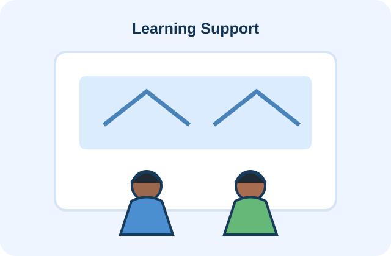

Welcome back, Karthik 👋
Keep making a positive impact.
K
8Registered Events
5Completed Events
32Service Hours
3Certificates

Tree Plantation DrivePerambalur, Tamil Nadu • 20 Aug 2026
Registered
Community Blood Donation CampChennai, Tamil Nadu • 25 Aug 2026
Registered
Learning SupportAriyalur, Tamil Nadu • 24 Aug 2026
RegisteredScan Event QR

Show this at the event for attendance
No camera access in demo mode.
Service Hours Progress
32Hours
Goal: 50 hours • 64%
Tree Plantation DriveGreen Earth Foundation • 20 Aug 2025